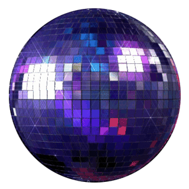
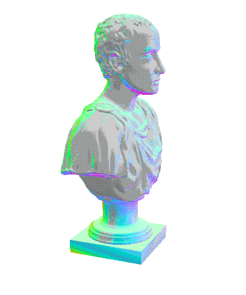

(15:11) (15:12)
(15:13) (15:14)
(15:15) (15:16)
(15:17) (15:18)
(15:19) (15:20)
(15:21) (15:22)
(15:23) (15:24)
(15:25) (15:26)
(15:27) (15:28)
(15:29) (15:30)
(Luke 15:31) “‘My son,’ the father said,
‘you are always with me,
and everything I have is yours.
(Luke 15:32) But we had to celebrate and be glad,
because this brother of yours was dead and is alive again;
he was lost and is found.